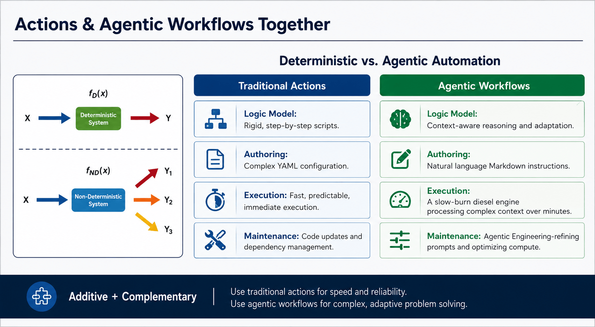

GitHub Actions, with reasoning
GitHub Agentic
Workflows
Describe a task in natural language. An AI agent works through it in a controlled GitHub Actions environment.
Natural language in. Useful automation out.
A different kind of automation
Give the agent a goal, not a script.
Agentic Workflows run AI agents in CI/CD. Rather than hard-coding every decision, you define an outcome and let an agent reason through the work.
-
01
Automation
Turn repository events into work an agent can investigate, draft, and complete.
-
02
Safety
Keep agent execution isolated, permission-aware, and observable inside GitHub Actions.
-
03
Reasoning
Use AI models to adapt when a task calls for judgment instead of a fixed sequence.

Built to complement
Not a replacement for GitHub Actions.
Traditional Actions are ideal for fast, deterministic jobs. Agentic Workflows add a practical option for tasks that need exploration, interpretation, or iterative problem solving.

Your next workflow
Start with the outcome.
Learn the concepts, then use the official guide to build an Agentic Workflow for your repository.
Open the overview